36 A Game of Telephone
Comparisons of Who?
Data
$$ \newcommand{X}{} \newcommand{Y}{}
$$
The Setup
The Data
Income data from the California CPS. Each dot is a California resident, age 25-35. The \(y\)-axis is income. The \(x\)-axis is years of education. Red is male, green is female.
The Game
We’ll play telephone. You’ll describe a comparison, pass it along, and see what comes back.
Row 1: Describe a comparison in words.
Row 2: Translate to a formula and compute a number.
Row 3: Translate the formula back to words.
Compare what Row 3 wrote to what Row 1 wrote. Where did things change?
Round 1
Row 1: Describe a Comparison
Someone asks: What’s the income gap between men and women in California?
Write a one-sentence answer to this question using the data. Don’t compute anything—just describe what you’d compute.
Pass your description to Row 2.
Row 2: Compute It
You got a description from Row 1. Translate it into code and compute a number.
Write down your formula. Pass only the formula to Row 3.
Row 3: Describe the Formula
You got a formula from Row 2. Write a one-sentence description of what it computes. Don’t look at what Row 1 wrote.
Compare
Row 1 and Row 3: Compare your descriptions. Are they the same?
Row 2: Show your number. Does everyone agree that’s what you computed?
Round 2
Row 1: A Harder Question
Someone asks: What’s the income gap between similarly-educated men and women?
Describe what comparison you’d make to answer this. Be precise.
Pass your description to Row 2.
Row 2: Compute It
Translate Row 1’s description into code. You’ll need within-education-level means.
Write down your formula. Pass only the formula to Row 3.
Row 3: Describe the Formula
Describe what Row 2’s formula computes. Whose incomes are being compared? Over what education levels?
Compare
Did anything get lost in translation?
Here’s a question to discuss: Row 2’s formula averages something over some set of people. Which people?
Round 3
Row 1: Be More Precise
Try again. Describe an “adjusted” income gap. This time, specify:
- What’s being averaged?
- Over whom?
Pass your description to Row 2.
Row 2: Compute It
Pass your formula to Row 3.
Row 3: Describe and Compute an Alternative
Describe what Row 2 computed. Then compute a different formula that could also match Row 1’s original description.
Compare
How many different numbers could reasonably answer the same verbal question?
Discussion
The Numbers
These are all defensible answers to “the income gap adjusted for education.” They’re different because women and men have different education distributions.
Why It Matters


Women have more education than men in this sample. When you average over different distributions, you get different answers.
The Takeaway
“The income gap” isn’t one number. When you read a comparison, ask:
- Comparison of who?
- Averaged over whom?
When you describe a comparison, be precise enough that someone else would compute the same thing.